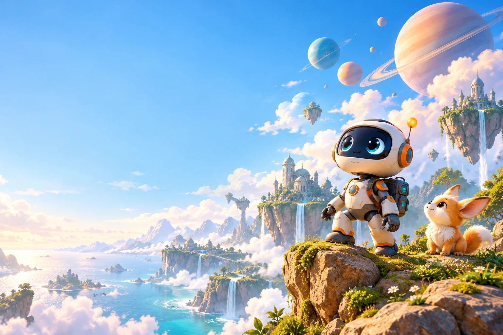
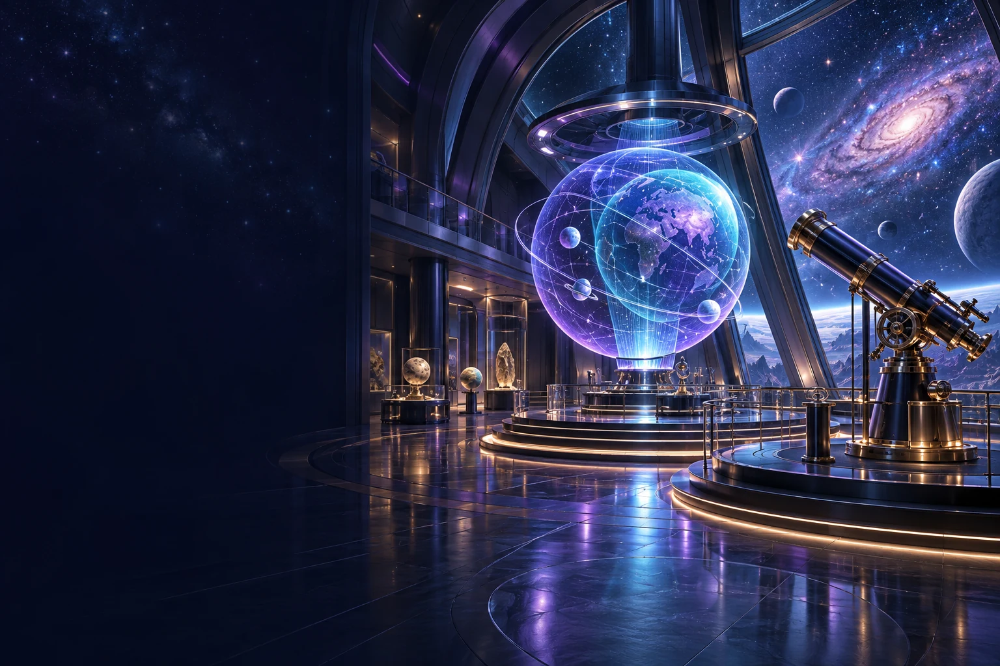

Yaş grubunu seç, sana uygun dünyaya adım at.İstediğin zaman değiştirebilirsin.


Hesap gerekmez. Yalnızca yaş grubun bu cihazda hatırlanır.
İçerikleri ve oyunları açmak için tarayıcınızda JavaScript'i etkinleştirin.